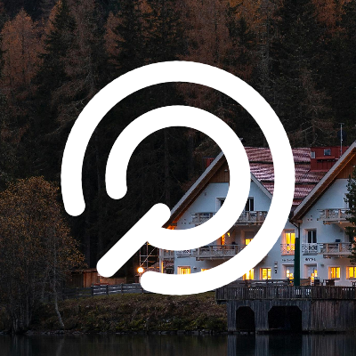
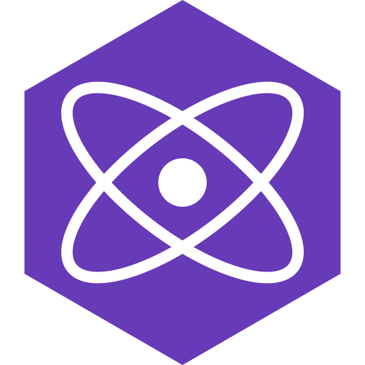
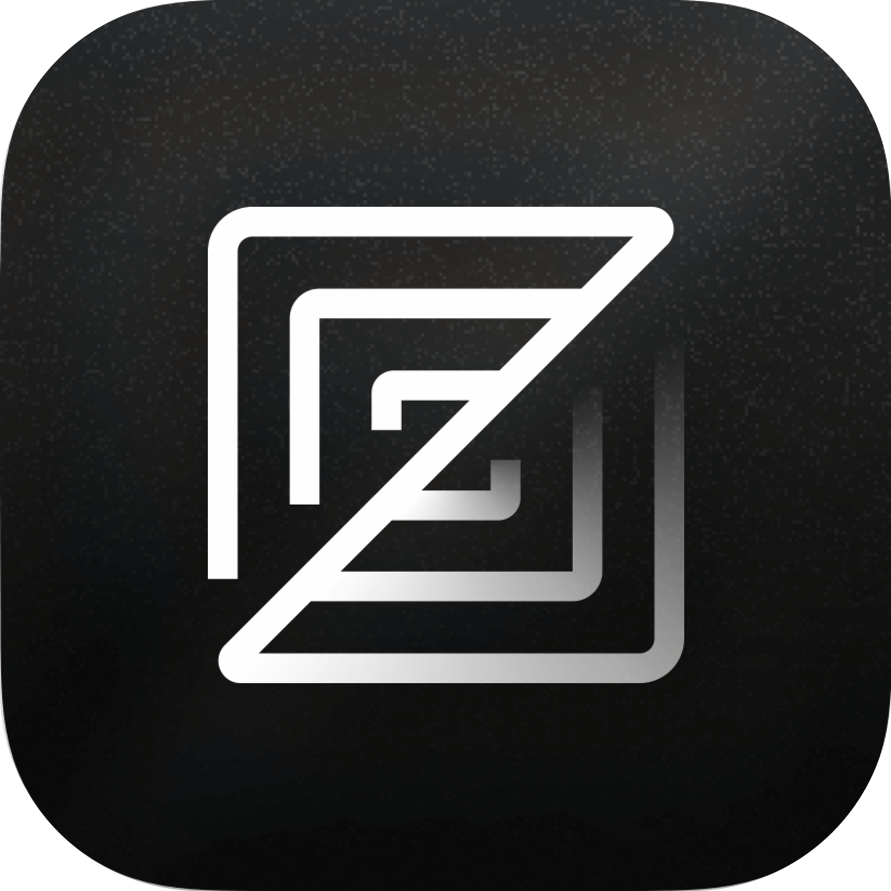

my favorite projects
-
Roturis an ecosystem as a service, used by thousands with a small but active community
-
originChatsis an ultra tinkerable chat app alternative to discord
-
Sableis a rotur integrated chatbot with personalities and an incredible memory system
-

OSLis a source to source transpiler that targets go, made by me and by far my favorite language to work in -
originOSis a browser based desktop and long-running passion project, the first rotur project


checkout my git
stuff i use and love
Languages
OSL
Frameworks & Tools

PreactEditor & Environment

Zed MistWarp
MistWarp